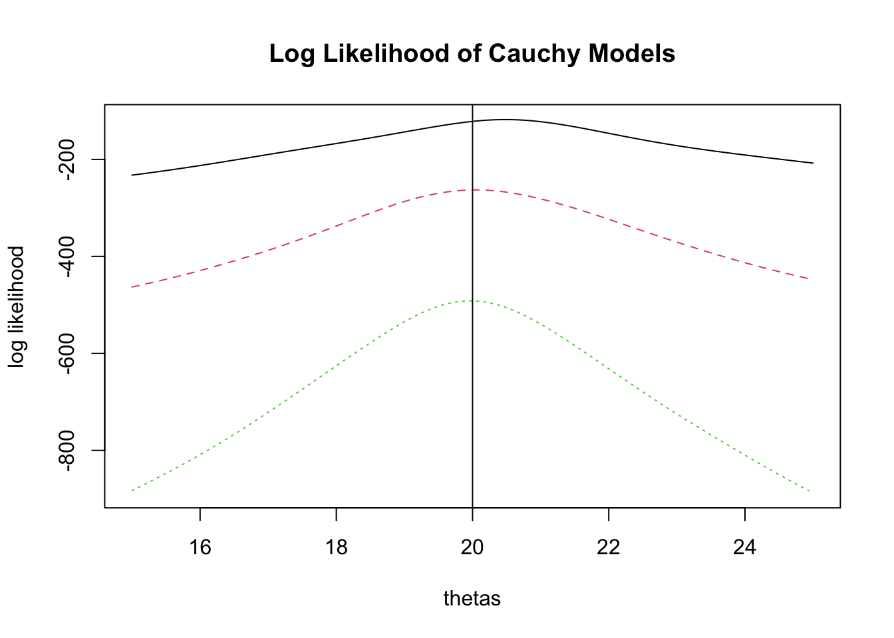
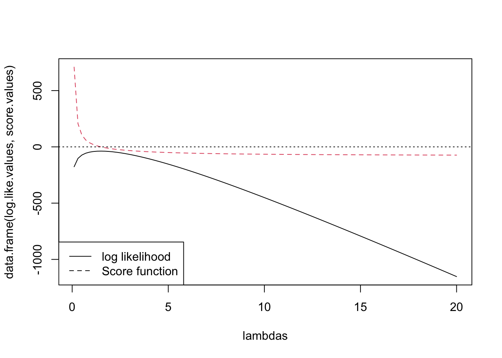
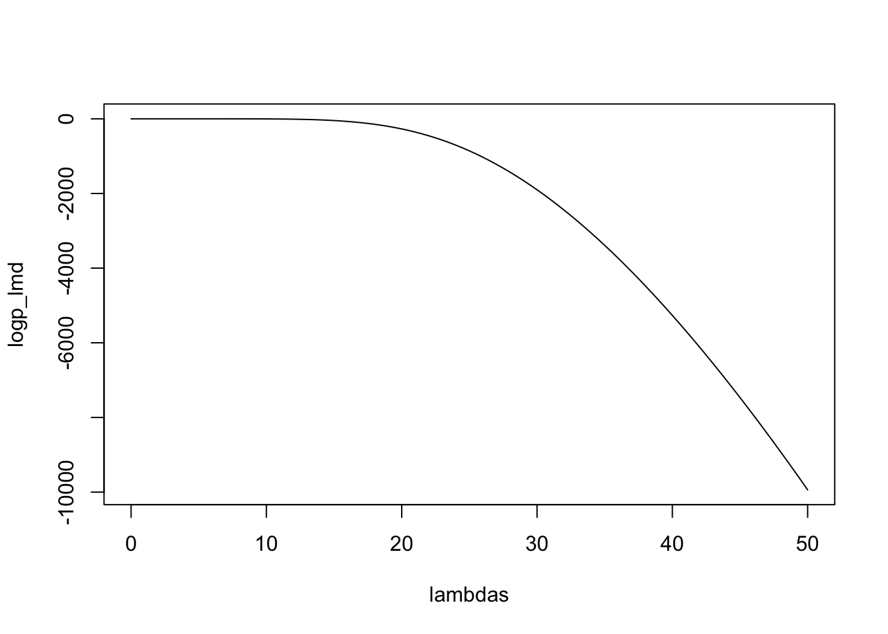

log_like_cauchy <-function (theta, x) sum(dcauchy(x, theta, log=TRUE))thetas <-seq (15,25, length=100)d1 <-rcauchy(50, location =20)log.like.d1 <-sapply(thetas, log_like_cauchy, x = d1)d2 <-rcauchy(100, location =20)log.like.d2 <-sapply(thetas, log_like_cauchy, x = d2)d3 <-rcauchy(200, location =20)log.like.d3 <-sapply(thetas, log_like_cauchy, x = d3)matplot(thetas, data.frame(log.like.d1, log.like.d2, log.like.d3), type ="l",ylab ="log likelihood",main ="Log Likelihood of Cauchy Models")abline (v =20)

## Let's look at the variability of log likelihood and MLE# also show how to automate the above code for multiple datasetsnrep <-50for (i in1:nrep){ name.data <-paste0("smalldata",i)assign(name.data, rcauchy(20, location =20) )assign(paste0("log.like.smalldata",i), sapply(thetas, log_like_cauchy, x =get(name.data)))}for (i in1:nrep){ name.data <-paste0("largedata",i)assign(name.data, rcauchy(200, location =20) )assign(paste0("log.like.largedata",i), sapply(thetas, log_like_cauchy, x =get(name.data)))}par (mfrow =c(1,2))matplot(thetas , data.frame(mget(paste0("log.like.smalldata",1:nrep))) , type ="l" , ylab ="log likelihood" , main ="Sample Size = 20")matplot(thetas , data.frame(mget(paste0("log.like.largedata",1:nrep))) , type ="l" , ylab ="log likelihood" , main ="Sample Size = 200")
8 Maximum likelihood estimation for poisson data with zeros unobserved
# For all three functions,# the arguments are the vector of observations, the number of iterations to# do, and the initial guess (defaulting to the sample mean). The result is# a data frame with one row for each iteration (including the initial guess),# with the columns being the estimate for lambda at that iteration and the# log likelihood for that value of lambda (minus the factorial terms that# don’t involve lambda).# COMPUTE LOG LIKELIHOOD. The arguments are the data vector and a value for# lambda (or vector of values). The result is the log probability of the data# given that value for lambda, omitting the factorial terms (or a vector of# log probabilities if lambda is a vector).nzp.log.likelihood <-function (n, lambda){sum(n) *log(lambda) -length(n) * (lambda +log(1-exp(-lambda)))}nzp.scorefunction <-function(n, lambda){ mean.n <-mean (n)sum(n)/lambda -length(n)/(1-exp(-lambda))}# FIND MLE BY SIMPLE ITERATION.nzp.simple.iteration <-function (n, r, lambda0=mean(n)){ mean.n <-mean(n) lambda <-rep(0,r+1) lambda[1] <- lambda0for (i in1:r) { lambda[i+1] <- mean.n * (1-exp(-lambda[i])) }data.frame (lambda=lambda, log.lik=nzp.log.likelihood(n,lambda))}# FIND MLE BY NEWTON-RAPHSON ITERATION.nzp.newton.raphson <-function (n, r, lambda0=mean(n)){ mean.n <-mean(n) lambda <-rep(0,r+1) lambda[1] <- lambda0for (i in1:r) { e <-exp(-lambda[i]) lambda[i+1] <- lambda[i] - (mean.n/lambda[i] -1/(1-e)) / (e/(1-e)^2- mean.n/lambda[i]^2) }data.frame (lambda=lambda, log.lik=nzp.log.likelihood(n,lambda))}# FIND MLE BY THE METHOD OF SCORING.nzp.method.of.scoring <-function (n, r, lambda0=mean(n)){ mean.n <-mean(n) lambda <-rep(0,r+1) lambda[1] <- lambda0for (i in1:r) { e <-exp(-lambda[i]) lambda[i+1] <- lambda[i] - (mean.n/lambda[i] -1/(1-e)) / ((e/(1-e) -1/lambda[i]) / (1-e)) }data.frame (lambda=lambda, log.lik=nzp.log.likelihood(n,lambda))}## test with generated datasetsx<-rpois (100, lambda =1.5)xp <- x[x>0]# mean of xp is upward biased estimates of 1.5mean(xp)
[1] 1.925926
## look at the log likelihoodlambdas <-seq (0.1, 20, length =100)log.like.values <-sapply (lambdas, nzp.log.likelihood, n = xp)score.values <-sapply (lambdas, nzp.scorefunction, n = xp)matplot(lambdas, data.frame(log.like.values, score.values), type ="l")legend("bottomleft", legend =c("log likelihood", "Score function"), lty =c(1,2))abline(h=0, lty=3)

nzp.simple.iteration(xp,15, mean(xp))
nzp.simple.iteration(xp,15,0.1)
nzp.simple.iteration(xp,15,100)
nzp.newton.raphson(xp,15, mean(xp))
nzp.newton.raphson(xp,15,0.1)
nzp.newton.raphson(xp,15,100)
Warning in log(lambda): NaNs produced
Warning in log(1 - exp(-lambda)): NaNs produced
nzp.method.of.scoring(xp,15, mean(xp))
nzp.method.of.scoring(xp,15,0.1)
nzp.method.of.scoring(xp,15,1000)
9 A Demonstration of Golden section method for non-differential function
golden <-function(f,brack.int,eps=1e-4,...) { g <- (3-sqrt(5))/2 xl <-min(brack.int) xu <-max(brack.int) tmp <- g*(xu-xl) xmu <- xu-tmp xml <- xl+tmp fl <-f(xml,...) fu <-f(xmu,...)while(abs(xu-xl)>(1.e-5+abs(xl))*eps) {if (fl<fu) { xu <- xmu xmu <- xml fu <- fl xml <- xl+g*(xu-xl) fl <-f(xml,...) } else { xl <- xml xml <- xmu fl <- fu xmu <- xu-g*(xu-xl) fu <-f(xmu,...) } }if (fl<fu) xml else xmu}## a testf1 <-function(theta) -1997*log(2+theta)-1810*log(1-theta)-32*log(theta)plot (f1, xlim =c(0.001,0.999))
#Find MLE and SD for Poisson Interval Data with “nlm”
## a utility function to avoid over/under flow in computing log_sum_explog_sum_exp <-function (lx){ mlx <-max (lx) mlx +log(sum(exp(lx - mlx)))}# Compute the log likelihood for a Poisson mean parameter given interval# data.## Arguments:# lambda The Poisson mean parameter# low Vector of low ends of intervals (positive integer)# high Vector of high ends of intervals (positive integer)## Value: The log probability of Poisson values lying in the given# intervals, based on the mean parameter given.poisson_log_likelihood <-function (lambda, low, high){ ll <-0for (i in1:length(low)) { lp <-c()for (x in low[i]:high[i]) lp <-c(lp, dpois (x, lambda, log =TRUE)) ll <- ll +log_sum_exp (lp) } ll}# Find the MLE for the Poisson mean parameter given data on iid values # specifying an interval in which each value lies (not necessarily a# single value).## Arguments:# low Vector of low ends of intervals (non-negative integers)# high Vector of high ends of intervals (non-negative integers)## Values: # MLE for the mean parameter and # standard deviation.poisson_mle <-function (low, high){if (length(low) !=length(high))stop("low and high have different lengths")if (any(floor(low)!=low) ||any(floor(high)!=high))stop("interval ends are not all integers") neg_log_like <-function (lambda) -poisson_log_likelihood (lambda,low,high) nlmfit <-nlm (neg_log_like, (mean(low) +mean(high)) /2, hessian =TRUE) est <- nlmfit$estimate sd <-sqrt (1/nlmfit$hessian[1,1]) CI <- est +c(-sd, sd) *1.96list (est=est, sd = sd, CI = CI)}## a test with a simulated data setpn <-rpois (1000, lambda =20)low <-pmax(pn -1, 0)high <- pn +4poisson_mle (low, high)
# from the result, we have also found that the sd estimation is not accurate. # this is reasonable because the sd estimate is only justified "asymptotically". ## test with another data setpn2 <-rpois (1000, lambda =20)low2 <-pmax(pn2 -50, 0)high2 <- pn2 +5poisson_mle (low2, high2)
# plot log likelambdas <-seq (0, 50, by =0.5)nl <-length (lambdas)logp_lmd <-rep (0, nl)for (i in1:nl){ logp_lmd [i] <-poisson_log_likelihood (lambdas[i], low2, high2)}## the reason that the estimate of sd is very bad is that ## the log likelihood at MLE is very flatplot (lambdas, logp_lmd, type ="l")

# plot log like of the first data setlambdas <-seq (0, 50, by =0.5)nl <-length (lambdas)logp_lmd <-rep (0, nl)for (i in1:nl){ logp_lmd [i] <-poisson_log_likelihood (lambdas[i], low, high)}plot (lambdas, logp_lmd, type ="l")